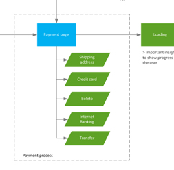

Chris Paiva
, aUX Designer
.Portfolio
PagSeguro Checkout Redesign
Responsible for all user experience architecture and usability. As result of this hard work, checkout conversion increased by 6%.
Additionaly, I also was responsible for the mobile and lightbox versions.
DownloadWhat I did:
- Market benchmarketing
- Led usability tests
- User flow chart
- Wireframes
- Prototypes
- A/B tests
- Managed stakeholders expectations
Tiny Beans Independent Analysis
Independent usability analysis for Tiny Beans app having as objective to improve the onboarding process and increase users engagement.
I’ve also suggested some usability changes to improve the overall user experience.
DownloadWhat I did:
- Onboarding process
- User flow chart
- Wireframe
- Prototype
- Usability analysis
Skills
What I know
how to do
-

Wireframes I design for web and mobile.
. . . -

Prototype I create high fidelity and proof-of-concept prototype.
. . . -

User flows I love to describle flows and interactions.
. . . -

Usability analysis I’m good at analysing a product to make it better.
. . . -

And much more Benchmark, documents, design, HTML and CSS.
. . .
About
I'm Chris,
but I go by Kika too.
Working in the Brazilian industry for over 7 years, I have developed a large experience creating online products and e-commerce websites, optimising checkout processes, using wireframe and prototype skills.
Always looking to improve the user experience with respect to usability, information architecture, interaction design, personas, market benchmarks and research techniques. All supported by good organisation, time and project management.